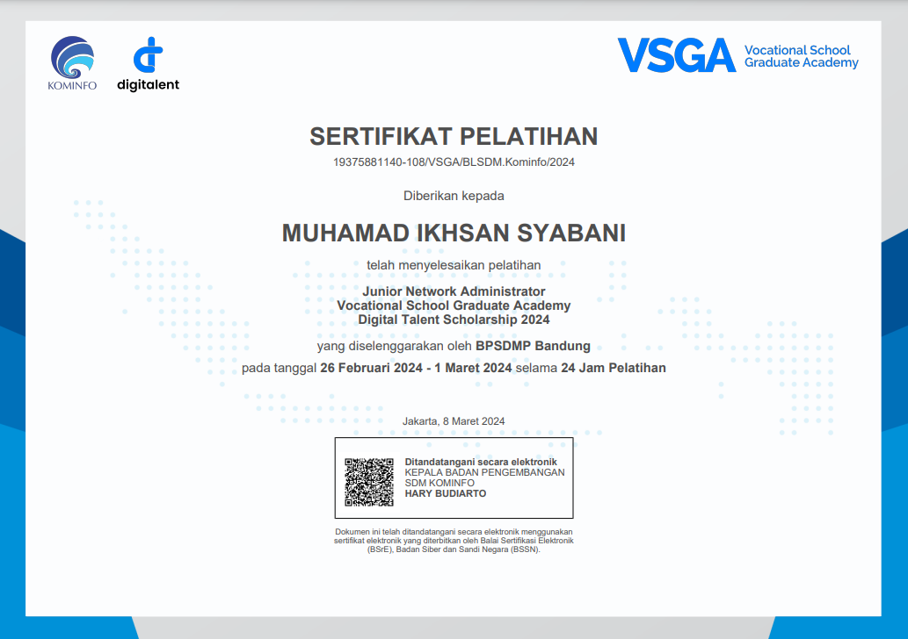

Portfolio Karya
Projek Tongsampah
Tempat Sampah Otomatis dengan Arduino bertujuan untuk mempermudah proses pembuangan sampah tanpa menyentuhnya, mencegah penyebaran kuman dan penyakit, serta memberikan manfaat bagi berbagai kalangan, termasuk kaum disabilitas tunanetra.
Mentoring Pkl
Saya dipercayai oleh dosen sebagai mentor untuk mata pelajaran Internet of Things (IoT) bagi siswa PKL.

Pelatihan Junior Network Administrator
Saya lolos untuk mengikuti pelatihan Junior Network Administrator yang di selenggarakan oleh BPSDMP KOMINFO BANDUNG yang di laksanakan pada tanggal 26 Februari - 1 Maret 2024. di Fkom Universitas Kuningan